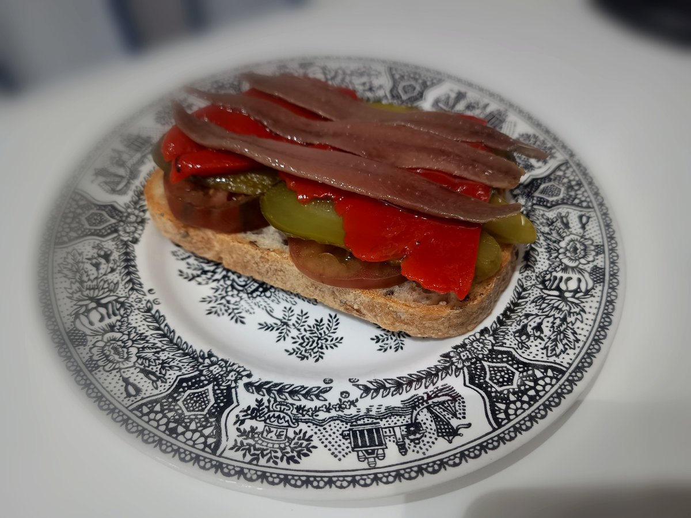

Tostada de anchoa con tomate y pepinillo
200 kcal/ración9 g proteína0.5 cuch. aceite1 raciónmerienda, cenasodio alto
Receta propia de Ricardo.

Ingredientes (1 ración/es)
- 1 rebanada de pan de 50 g
- 1 tomate pequeño en rodajas
- 2 pepinillos en vinagre pequeños (o 1 si es grande)
- 1 pimiento de piquillo asado
- 3 anchoas del Cantábrico en aceite, limpias y sin espinas
Pasos
El modo voz usa el reconocimiento de voz del navegador. En Chrome, el audio se envía a los servidores de Google para transcribirlo; en otros navegadores puede procesarse en el propio dispositivo. Si prefieres no usar el micrófono, los botones de abajo funcionan igual.
- Tostar la rebanada de pan.
- Cubrir la tostada con las rodajas de tomate.
- Cortar el pepinillo en láminas y repartirlas encima del tomate.
- Abrir el pimiento de piquillo y colocarlo sobre el pepinillo.
- Terminar con las tres anchoas por encima y servir.